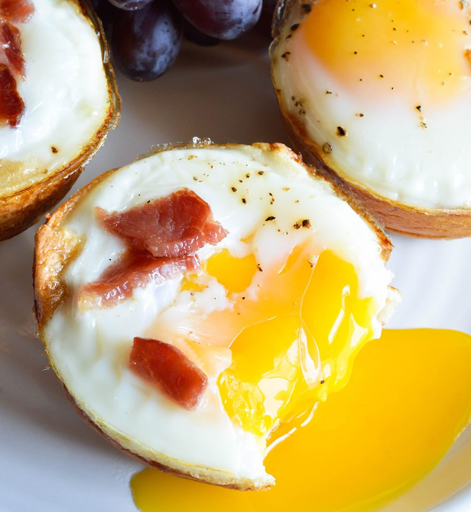

Bacon & Egg Breakfast Cups
Ingredients:
- 6 Bread Rolls
- 4 Strips of Bacon
- 6 Eggs
- Salt/Pepper
Directions:
Preheat oven to 200 degrees
- Flatten the rolls with a rolling pin. As flat as possible without breaking them.
- Form flattened rolls into muffin tin that has been sprayed with nonstick.
- Fill each muffin tin with a few pieces of chopped bacon.
- Crack an egg right over the top of each muffin tin.
- Sprinkle with fresh cracked salt and pepper.
- Bake for 15-17 minutes or until egg whites are fully cooked.
- Add a few more pieces of bacon on top during the last 5 minutes of baking.
- Ta dah you are done, enjoy!
Nutella Crepe

Ingredients:
- 2 eggs
- 1 cup of milk
- 1/4 cup of water
- 1 cup all purpose flour
- 2 teaspoons of vanilla
- 2 table spoons of sugar
- 2 table spoons of butter
Directions:
- Place all ingredients into a blender and blend until smooth, if you dont have a blender instead whisk together in a bowl until smooth
- Strain the batter into another bowl. Cover with plastic wrap and place in the refrigerator for at least an hour to allow all the air bubbles to settle.
- Heat a small crêpe pan (or nonstick skillet) over medium high heat. Swirl 1 teaspoon of butter in the pan
- Add a small amount of batter to the pan–swirl the pan so that the batter evenly and thinly coats the bottom.Cook for about 30 seconds (until lightly browned) and flip.
- Cook for another 10-15 seconds and remove to a plate. Continue cooking the rest of the batter, adding additional butter every third crêpe or so.
- Place the crêpes on a sheet tray, cover with aluminum foil, and keep warm in a 225 degree F oven until ready to serve.
- To serve, spread each crêpe with your nutella topping: Nutella, and then fold in half, then into fourths, dust with powdered sugar and serve warm.
- Ta dah you are done, enjoy!
Banana & Strawberry Granola Bowl

Ingredients:
- 1 banana
- 4 strawberrys
- 100g of granola
- 180g of yoghurt
- drizzle of maple syrup
- sprinkle of flaked almonds (optional)
Directions:
- Slice the banana into pieces and cut the stawberrys in half
- put the yoghurt into a bowl
- add the granola over the top
- throw in the fruit
- drizzle over the maple syrupspinkle over the flaked almonds (if you wish to add them)
- Ta dah you are done, enjoy!